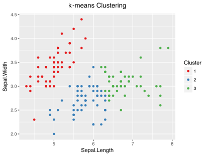
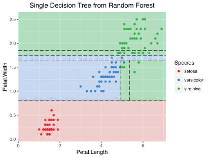
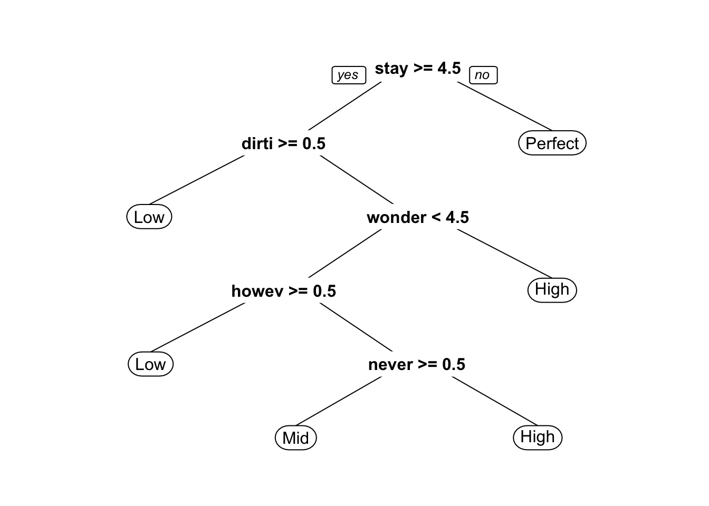

  Figure 1: Machine learning methods in action on Fisher's classic Iris data set.  Figure 2: Bag-of-Words CART model to predict customer review scores of Boston Airbnbs given raw text from customer comments.

I am a 4th year PhD candidate at the MIT Operations Research Center advised by Dimitris Bertsimas. My research is on machine learning with applications to healthcare analytics. Working closely with a team of fellow doctoral students, I have developed fast, tractable algorithms in machine learning for statistical inference using tools from optimization, with a focus on SVMs for classification, k-means clustering, and missing data imputation. Currently, I am collaborating with two oncologists from Dana Farber Cancer Institute to develop personalized healthcare recommendations to improve patient outcomes. I also enjoy being a TA for students at the MIT Sloan School of Management.
Before coming to the ORC, I completed an REU at Mt Holyoke College focused on an mathematical modeling and epidemiology. Our group developed a population-level model for tuberculosis in the USA and analyzed the cost effectiveness of several intervention strategies, such as providing foriegn aid to targeted countries. This experience is what sparked my interest in operations research. I enjoy working on practical problems which give rise to challenging mathematical problems.
As an undergraduate, I participated in several extracurriculars including the Yale Drop Team (microgravity research group). Working with a NASA biologist and two Yale Physics professors, our student team designed an automated apparatus to grow 3-Dimensional tissue cultures in zero-gravity. Our proposal to build a 3-D cell culture apparatus was accepted by the NASA Flight Opportunities Program in October 2011. In May 2012, our team completed experiments aboard NASA's Zero-G aircraft; here is footage of weightlessness during one of the flights.
Outside of work and school, I have also been a volunteer at The Full Belly Project, a non-profit engineering group that invents and distributes low-cost agricultural tools for use in developing countries. In the summer of 2012, I travelled to Guatemala to test out a UV scanner that screen for aflatoxins in peanuts; you can check out my travel blog here.